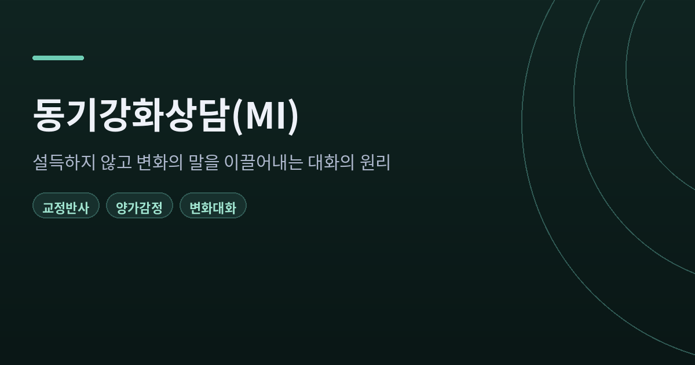
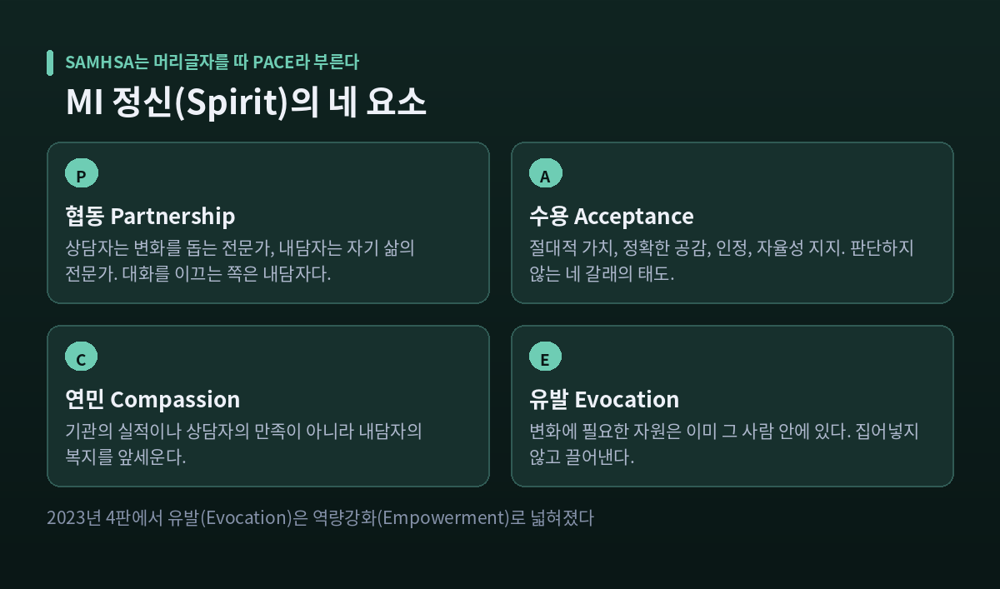
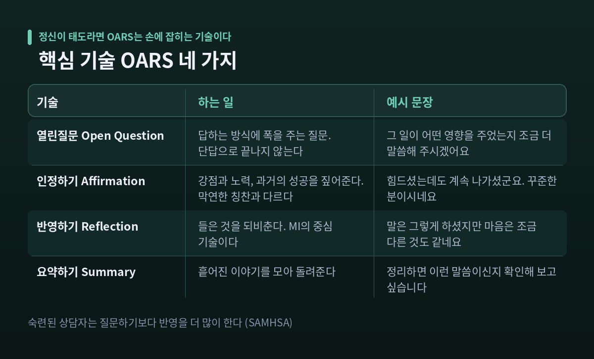
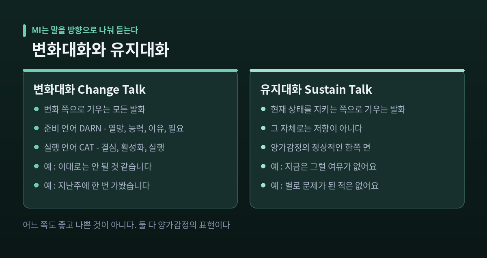
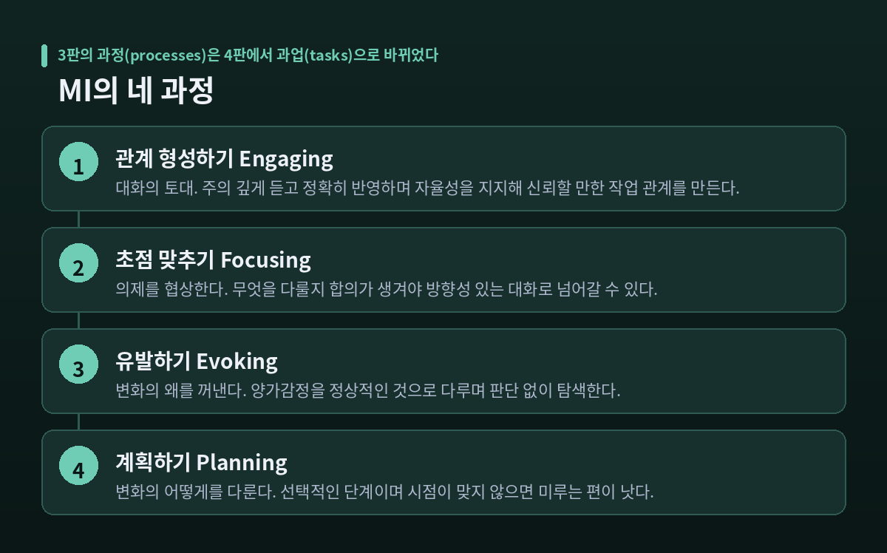
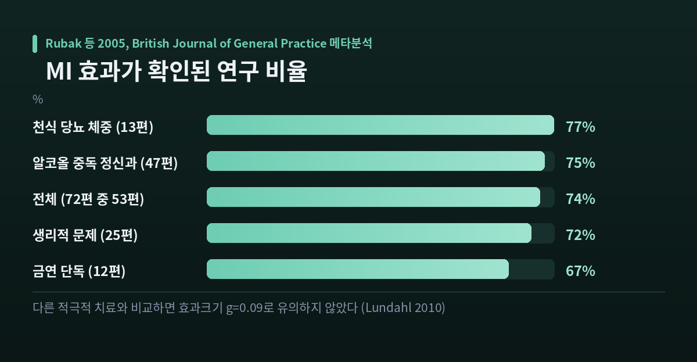

이번 글에서는 동기강화상담(Motivational Interviewing, MI)의 원리를 정리해 보겠습니다. 상대를 설득하지 않으면서도 변화를 향한 말이 그 사람 입에서 나오게 하는 대화 방식입니다. 이론의 뼈대부터 실제 기술, 그리고 연구가 확인한 한계까지 차례로 살펴보겠습니다.
동기강화상담은 1980년대 미국의 심리학자 윌리엄 밀러가 처음 제안했습니다. 알코올 문제를 가진 사람들을 만나던 임상 경험에서 나온 것입니다. 첫 기술은 1983년 학술지 『Behavioural Psychotherapy』에 실린 논문이었습니다.
이후 영국의 스티븐 롤닉이 공저자로 합류했습니다. 두 사람이 함께 쓴 책 『Motivational Interviewing』은 1991년 초판 이후 2013년 3판, 2023년 4판까지 이어졌습니다.
뿌리는 칼 로저스의 인간중심상담에 닿아 있습니다. 다만 차이가 하나 있습니다. 로저스의 접근이 방향을 정하지 않는 쪽이라면, MI는 특정한 변화 목표를 향한 방향성을 분명히 갖습니다.
밀러와 롤닉은 MI를 이렇게 정의했습니다. 변화의 언어에 특별히 주의를 기울이는, 협동적이고 목표 지향적인 의사소통 양식이라고요. 수용과 연민의 분위기 안에서 그 사람 자신의 변화 이유를 끌어내는 것이 목적입니다.
한 가지 덧붙이면, 흥미로운 사실이 있습니다. 1983년 원 논문에는 '양가감정'이라는 단어가 아예 등장하지 않았습니다. 대신 긍정적 동기와 부정적 동기 사이의 저울이라는 비유를 썼습니다. 오늘날 MI의 핵심어가 된 개념이 처음부터 그 이름으로 있었던 것은 아닌 셈입니다.
MI가 가장 먼저 경계하는 것은 상담자의 선의입니다. 밀러와 롤닉은 이것을 '교정반사(righting reflex)'라고 불렀습니다. 상황을 바로잡고, 해를 막고, 상대의 복지를 증진하려는 자연스러운 욕구입니다.
문제는 이 마음이 대화 안에서 작동하는 방식입니다.
변화를 앞둔 사람의 마음속에는 찬성과 반대가 함께 있습니다. 이때 상담자가 변화 쪽 논거를 먼저 꺼내 들면, 남은 자리는 하나뿐입니다. 상대는 자연스럽게 반대편을 맡게 됩니다. 자기 입으로 "그래도 지금은 어려워요"라고 말하게 되는 것입니다.
사람은 자유가 위협받는다고 느끼면 그 자유를 다시 주장하려 합니다. 심리학에서는 이를 반발심리(reactance)라고 부릅니다. 설득이 설득의 반대 방향으로 작동하는 이유입니다.
그래서 MI는 요청받지 않은 조언, 직면, 지시, 경고를 삼갑니다. MINT는 이 점을 분명히 합니다. MI는 사람을 변화시키는 방법이 아니며, 대화에 얹는 기법 모음도 아니라고요.
4판에서는 이 용어가 더 일상적인 표현인 '고치려는 반사(fixing reflex)'로 바뀌었습니다.
양가감정(ambivalence)은 변화에 찬성하는 동기와 반대하는 동기가 동시에 존재하는 상태를 말합니다.
예전 상담 모델에서는 이것을 저항이나 부정으로 읽는 경우가 많았습니다. 지금 MI는 다르게 봅니다. 삶의 근본적인 변화를 앞두고 두 마음을 갖는 것은 정상이라는 것입니다.
미국 약물남용·정신건강서비스청(SAMHSA)의 정리는 이렇습니다. 양가감정은 변화의 장애물이 될 수는 있지만, 변화 방법에 대한 지식이나 기술이 없다는 뜻은 아니라고요.
관점이 바뀌면 상담자의 할 일도 바뀝니다. 양가감정을 없애야 할 대상으로 보면 논박하게 됩니다. 통과해야 할 지점으로 보면 함께 머물며 탐색하게 됩니다.
MI에서 정신(Spirit)은 기법에 앞섭니다. 이 태도가 빠지면 같은 기술도 조작이 됩니다. SAMHSA는 네 요소의 머리글자를 따 PACE라고 부릅니다.

협동(Partnership)은 능동적 협력입니다. 상담자는 변화를 돕는 전문가이고, 내담자는 자기 삶의 전문가입니다. 상담자가 부드럽게 영향을 주되, 대화를 이끄는 사람은 내담자입니다.
수용(Acceptance)은 비판단적 태도입니다. 네 갈래로 나뉩니다. 모든 사람의 내재적 가치를 귀하게 여기는 절대적 가치, 상대의 의미를 정확히 되비추는 공감, 강점과 노력을 알아보는 인정, 그리고 자기결정권을 철회할 수 없는 권리로 인정하는 자율성 지지입니다.
연민(Compassion)은 내담자의 복지를 적극적으로 앞세우는 것입니다. 기관의 실적이나 상담자의 만족이 아닙니다.
유발(Evocation)은 사람 안에 이미 변화에 필요한 자원이 있다고 보는 전제입니다. 라틴어로 비유하면 집어넣는 docere가 아니라 끌어내는 ducere에 가깝습니다.
참고로 2023년 4판에서 저자들은 네 번째 요소를 '역량강화(Empowerment)'로 넓혔습니다. 그 사람 자신의 강점과 자율성을 더 강조하기 위해서입니다. 나머지 세 요소는 그대로입니다.
정신이 태도라면, OARS는 손에 잡히는 기술입니다.

열린 질문(Open Question)은 답하는 방식에 폭을 주는 질문입니다. 예·아니오나 단답으로 끝나지 않습니다. 특히 자연스러운 답이 변화 쪽 말이 되는 질문을 유발적 질문이라고 부릅니다.
인정하기(Affirmation)는 강점과 노력, 과거의 성공을 짚어주는 것입니다. 막연한 칭찬과는 다릅니다. 4판에서는 단순 인정과 복합 인정을 구분했습니다.
반영하기(Reflection)는 MI의 중심 기술입니다. 들은 것을 되비추되, 단순히 따라 말하는 데 그치지 않습니다. 말하지 않은 의미를 조심스럽게 추측해 건네는 복합 반영, 변화 쪽 말과 유지 쪽 말을 '그리고'로 함께 담는 양면 반영 등이 있습니다.
요약하기(Summary)는 흩어진 이야기를 모아 되돌려 주는 일입니다. 특히 변화 쪽 말만 모아 건네는 요약을 '꽃다발'이라고 부릅니다.
SAMHSA는 한 줄로 이렇게 정리합니다. MI에 숙련된 상담자는 질문하기보다 반영을 더 많이 한다고요.
MI는 대화에서 오가는 말을 방향으로 나눠 듣습니다.

변화대화(change talk)는 변화 쪽으로 기우는 모든 발화입니다. 유지대화(sustain talk)는 현재 상태를 지키는 쪽으로 기우는 모든 발화입니다. 어느 쪽도 좋고 나쁜 것이 아닙니다. 둘 다 양가감정의 표현입니다.
변화대화는 다시 일곱 갈래로 나뉩니다. 머리글자를 모아 DARN-CAT이라고 부릅니다.
| 구분 | 약자 | 한국어 | 내용 |
|---|---|---|---|
| 준비 언어 | D — Desire | 열망 | 변화에 대한 선호. "그렇게 되면 좋겠어요" |
| 준비 언어 | A — Ability | 능력 | 할 수 있다는 지각. "마음만 먹으면 가능할 것 같아요" |
| 준비 언어 | R — Reason | 이유 | 구체적인 근거. "그래야 아이와 시간을 보낼 수 있으니까요" |
| 준비 언어 | N — Need | 필요 | 당위의 표현. "이대로는 안 됩니다" |
| 실행 언어 | C — Commitment | 결심 | 의도의 표명. "하겠습니다" |
| 실행 언어 | A — Activation | 활성화 | 기울었지만 결심 전. "준비는 된 것 같아요" |
| 실행 언어 | T — Taking Steps | 실행 | 이미 취한 행동. "지난주에 한 번 가봤습니다" |
앞의 네 가지가 준비 언어, 뒤의 세 가지가 실행 언어입니다. 준비 언어에서 실행 언어로 옮겨가는 흐름이 MI가 눈여겨보는 지점입니다.
여기서 연구 결과 하나가 흥미롭습니다. Magill 등이 2018년에 36개 연구를 메타분석한 결과, 상담자의 MI 불일치 행동은 유지대화와는 상관이 있었지만 변화대화와는 상관이 없었습니다. 그리고 전체 발화 중 유지대화 비중이 높을수록 이후 결과가 나빴습니다. 저자들은 이론이 강조해 온 변화대화보다, 오히려 유지대화의 비중이 더 중요한 지표일 수 있다고 정리했습니다.
MI에서 저항(resistance)은 이제 쓰지 않는 용어입니다. 두 가지로 해체되었습니다.
하나는 유지대화입니다. 내담자 안에서 일어나는 일이고, 변화 주제에 대한 말입니다. 정상적인 현상입니다.
다른 하나는 불화(discord)입니다. 두 사람 사이에서 일어나는 일입니다. 논쟁하기, 말 끊기, 깎아내리기, 무시하기 같은 행동으로 드러납니다.
이 구분이 실무에서 갖는 뜻은 분명합니다. 유지대화가 나오면 계속 들으면 됩니다. 불화가 나오면 대화 방식을 바꿔야 한다는 신호입니다. 초점을 덜 대립적인 주제로 옮기거나, 부분적으로 책임을 지며 사과하거나, 상대의 주제를 그대로 받아 나란히 가는 방법이 있습니다.
상담자가 빠지기 쉬운 함정에도 이름이 붙어 있습니다. 답을 이미 갖고 있다고 가정하는 전문가 함정, 질문만 이어가 상대를 수동적 응답자로 만드는 질문-대답 함정, 관계가 만들어지기 전에 주제부터 정하려는 조급한 초점 함정 같은 것들입니다.
MI는 대화의 흐름을 네 단계로 봅니다. 3판까지는 '과정(processes)'이라 불렀고, 4판에서는 더 쉬운 말인 '과업(tasks)'으로 바뀌었습니다.

관계 형성하기(Engaging)가 토대입니다. 주의 깊게 듣고 정확히 반영하며 자율성을 지지해 신뢰할 만한 작업 관계를 만듭니다.
초점 맞추기(Focusing)에서는 의제를 협상합니다. 무엇을 다룰지에 합의가 생겨야 방향성 있는 대화로 넘어갈 수 있습니다.
유발하기(Evoking)는 변화의 '왜'를 꺼내는 단계입니다. 양가감정을 정상적인 것으로 다루며 판단 없이 탐색합니다.
계획하기(Planning)는 '어떻게'를 다룹니다. 다만 이 단계는 선택적입니다. 필요 없을 수도 있고, 시점이 맞지 않으면 미루는 편이 낫습니다.
네 단계는 한 번에 한 방향으로만 가지 않습니다. 필요에 따라 앞뒤로 오갑니다.
MI에서 자주 쓰이는 도구가 0~10 척도입니다. 두 가지 방향으로 씁니다.
중요도 척도는 이렇게 묻습니다. "0에서 10까지 중, 이 변화가 당신에게 얼마나 중요합니까?"
자신감 척도는 이렇게 묻습니다. "만약 하기로 결심한다면, 해낼 수 있다고 0에서 10 중 얼마나 자신하십니까?"
핵심은 숫자가 아닙니다. 그다음 질문입니다.
상대가 5라고 답했다고 해봅시다. 여기서 "왜 3이 아니라 5인가요?"라고 물으면, 상대는 5를 고른 근거를 설명하게 됩니다. 그 설명은 자연히 변화 쪽 말이 됩니다.
반대로 "왜 7이 아니라 5인가요?"라고 물으면 어떻게 될까요. 상대는 더 높이 가지 못하는 이유를 대게 됩니다. 변화에 반대하는 말이 나옵니다.
질문 하나의 방향이 대화의 방향을 결정합니다. 같은 척도, 같은 숫자인데도 말입니다.
MI는 비교적 연구가 많이 축적된 접근입니다. 다만 숫자를 읽을 때는 조심할 필요가 있습니다.

가장 널리 인용되는 것은 Rubak 등이 2005년 『British Journal of General Practice』에 발표한 메타분석입니다. 무작위대조시험 72편을 검토한 결과, 그중 53편(74퍼센트)에서 MI의 효과가 확인되었습니다.
조건에 따른 차이도 보고되었습니다. 만남이 5회를 넘는 경우 87퍼센트, 1회에 그친 경우 40퍼센트였습니다. 추적 기간이 12개월 이상이면 81퍼센트, 3개월이면 36퍼센트였습니다. 면담 시간이 60분인 경우와 20분 미만인 경우는 81퍼센트와 64퍼센트로 갈렸습니다.
청소년 대상 연구도 있습니다. 21편, 참가자 5,471명을 모은 메타분석에서 치료 직후 효과크기는 d = .173이었습니다. 작지만 통계적으로 유의했고, 추적 시점에도 유지되었습니다.
여기서 한계를 함께 적어야 공정합니다.
Lundahl 등이 2010년에 119편을 분석한 결과, 무처치나 대기자 같은 약한 비교집단과 견주었을 때 효과는 g = 0.28로 작은 범위였습니다. 그런데 다른 적극적 치료와 비교했을 때는 g = 0.09로 통계적 유의성이 사라졌습니다.
Rubak 연구에 대해서도 비판이 있습니다. 영국 CRD의 비평 초록은 리뷰 방법의 보고가 제한적이고 개별 연구 정보가 부족해 결론의 견고성을 판단할 수 없다고 평가했습니다. 연구 선정을 한 명이 단독으로 했고, 통계적 이질성을 평가하지 않았다는 점 등이 지적되었습니다.
금연 영역의 코크란 리뷰도 신중합니다. MI가 일반적 처치나 간단한 조언에 비해 완만하게 도움이 되는 것으로 보이지만, 연구 질의 편차와 이질성, 출판 편향 가능성 때문에 결과를 조심스럽게 해석해야 한다고 적었습니다.
정리하면 이렇습니다. MI가 도움이 된다는 방향성은 여러 메타분석에서 일관되게 나타납니다. 다만 효과크기는 대체로 작은 범위이고, 무엇과 비교하느냐에 따라 크게 달라집니다.
MINT는 MI가 특히 유용한 조건을 네 가지로 꼽습니다. 양가감정이 높을 때, 자신감이 낮을 때, 변화를 원하는지 자체가 불확실할 때, 그리고 변화의 이득이 불분명할 때입니다.
뒤집어 말하면 그 조건이 아닐 때는 맞지 않을 수 있다는 뜻이기도 합니다.
이미 결심이 선 사람에게 동기를 계속 유발하려 들면 시간만 흘러갑니다. MI는 애초에 양가감정을 다루려고 만들어진 방법입니다.
상담자가 어느 한쪽으로 안내하지 않아야 하는 상황도 있습니다. MI에서는 이를 평형(equipoise)이라고 부르며, 이때는 선택지들의 장단점을 균등하게 다루는 방식으로 스탠스를 바꿉니다.
배우기도 쉽지 않습니다. 밀러와 롤닉은 2009년에 「동기강화상담이 아닌 열 가지」라는 글을 썼습니다. 그 목록에 '배우기 쉬운 것'과 '만병통치약'이 나란히 들어 있습니다. 개발자 본인들이 직접 못 박은 셈입니다.
Rubak 분석에서 심리학자와 의사가 진행한 경우 79퍼센트와 83퍼센트, 그 외 직군은 46퍼센트였습니다. 훈련과 숙련도의 차이를 짐작하게 하는 수치입니다.
문화적 조정도 필요합니다. 상대의 문화를 가정하기보다, 개입과 그 사람의 맥락이 어긋나는 지점을 찾아 언어와 방식을 맞추는 작업이 따라야 합니다.
정리하면 이렇습니다.
동기강화상담은 새로운 논거를 상대에게 건네는 방법이 아닙니다. 그 사람 안에 이미 있는 변화의 이유가 밖으로 나올 자리를 만들어 주는 방법에 가깝습니다. 교정반사를 참는 일, 양가감정을 정상으로 보는 일, 말의 방향을 듣는 일이 그 자리를 만듭니다.
— 설득은 상담자의 말을 늘리지만, 변화는 내담자의 말에서 시작됩니다.
물론 만능은 아닙니다. 효과크기는 작은 범위이고, 상황에 따라 맞지 않기도 합니다. 개발자들조차 만병통치약이 아니라고 적어두었습니다.
다만 대화의 방향을 정하는 것이 누구의 말인가 하는 질문은, 상담실 밖에서도 오래 남습니다.